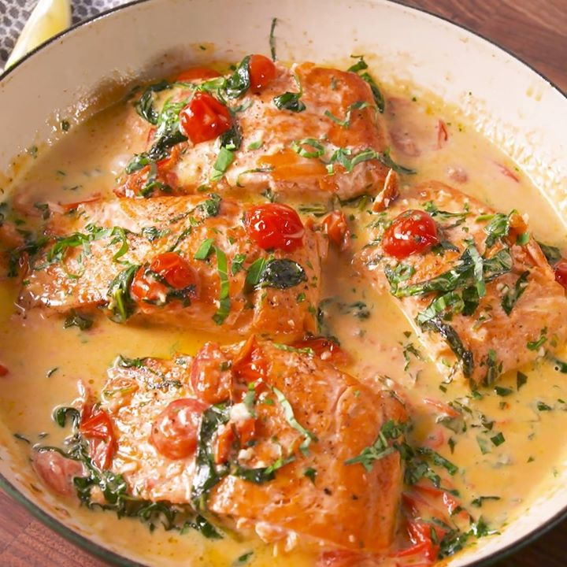

Fettuccine with cherry tomato butter sauce
Fettuccine with cherry tomato butter sauce is simplicity at its best.
Sauté bright cherry tomatoes with chopped onion in butter, then toss with al dente fettuccine.
Finish with fresh parsley and basil for a dish that's perfect for weeknights or when
you're short on time but still want great flavor.

Ingredients
- 1 pound fettuccine or linguine, spaghetti, etc
- 3 pints cherry tomatoes halved
- 1 medium onion diced
- 1 stick unsalted butter
- salt and pepper to taste
- ¼ cup parsley minced
- ¼ cup basil hand torn
Instructions
-
In a large pan saute the onion in butter over medium-low heat until soft (about 5 minutes) then
add the tomatoes. Season the tomatoes initially with a teaspoon of kosher salt.
-
Cook the sauce over medium heat for 30-35 minutes (stir frequently and lower heat if scorching)
or until the cherry tomatoes have burst and softened and the butter has completely blended
in with the tomatoes.
-
Meanwhile, bring a large pot of salted (2 tablespoons kosher salt per gallon of water) water to boil.
When the sauce is almost to your liking begin boiling the fettuccine to 1 minute less than al dente.
-
A few minutes before the pasta finishes cooking add 1 cup of pasta water to the sauce and stir
to combine. Continue to cook the sauce over medium heat.
-
Add the pasta to the sauce and toss to coat. Cook until the pasta is just al dente then turn off the heat
and season to taste with more salt and pepper as required. Add the herbs, toss once more, then plate.
If the sauce is at all dry, add more of the reserved pasta water a few ounces at a time to loosen it up.
Serve with grated parmesan cheese. Enjoy!
Video of recipe
Chicken tikka masala
Chicken tikka masala is a flavorful dish featuring marinated chicken cooked in a rich,
creamy tomato sauce. Tender pieces of chicken are seasoned with a blend of spices,
then simmered in a sauce made with tomatoes, cream, and aromatic spices. Ideal
for weeknights or when you crave a comforting, delicious meal without the fuss.

Ingredients
Chicken Marinade
- 1 cup plain yogurt
- juice of ½ lemon
- 3 cloves of garlic, finely grated
- 1 tbsp ginger, finely grated
- 2 tsp garam masala
- ½ tsp salt
- 6 boneless skinless chicken thighs, cut into bite size pieces
For the Sauce
- 2 tbsp Vegetable/Canola oil
- 2 tbsp butter
- 2 medium onions finely diced
- 3 cloves of garlic, finely grated
- 1 tbsp ginger, finely grated
- 1/2 tsp turmeric powder
- 1 tsp ground coriander
- 1 tsp ground cumin
- 1 tsp garam masala
- 1 tsp ground red chili powder
- 2 cups strained tomato sauce
- 1 cup heavy cream
- salt to taste
- fresh coriander to garnish
Instructions
-
In a bowl combine all ingredients and marinate for 1 hour.
-
In a large pot, heat oil on Medium-High. When hot, add chicken pieces, ensuring not to crowd the pan.
Cook for 2-3 minutes a side, until browned. Set aside.
-
In the same pan, add butter and onions, and cook until soft and translucent. Add Ginger and Garlic,
and sautee for 30-45 seconds. Then add turmeric, coriander powder, cumin, garam masala.
Fry until fragrant (15-20 seconds).
-
Add tomato sauce, ground red chili and season with salt to taste. Simmer for 15-20 minutes on low heat,
stirring occasionally until tomato sauce thickens, and takes on a deep reddish brown colour.
-
Add chicken and heavy cream, and cook for an additional 10 minutes until mixture is bubbling, glossy, and thick.
-
Garnish with fresh coriander and serve with hot Basmati rice, and Naan.
Video of recipe
Tuscan Butter Salmon
Tuscan butter salmon is a delectable dish featuring succulent salmon fillets
cooked in a creamy, garlic-infused butter sauce. The salmon is paired with
sun-dried tomatoes, spinach, and Parmesan, creating a rich and flavorful meal.
Perfect for weeknights or when you want a quick, elegant dinner without compromising on taste.

Ingredients
- 2 tbsp. extra-virgin olive oil
- 4 (6-oz) salmon fillets, patted dry with paper towels
- kosher salt
- Freshly ground black pepper
- 3 tbsp. unsalted butter
- 3 cloves garlic, minced
- 1 1/2 c. halved cherry tomatoes
- 2 c. baby spinach
- 1/2 c. heavy cream
- 1/4 c. Parmesan
- 1/4 c. chopped herbs (such as basil and parsley)
- Lemon wedges, for serving (optional)
Instructions
-
In a large skillet over medium-high heat, heat oil. Season salmon all over with salt and pepper.
When oil is shimmering but not smoking, add salmon skin-side up and cook until deeply golden, about 6 minutes.
Flip over and cook 2 minutes more. Transfer to a plate.
-
Reduce heat to medium and add butter. When butter has melted, stir in garlic and cook until fragrant,
about 1 minute. Add cherry tomatoes and season with salt and pepper. Cook until tomatoes are beginning to burst
then add spinach and cook until spinach is beginning to wilt.
-
Stir in heavy cream, parmesan and herbs and bring mixture to a simmer. Reduce heat to low and simmer
until sauce is slightly reduced, about 3 minutes.
-
Return salmon back to skillet and simmer until salmon is cooked through, about 3 minutes more.
-
Garnish with more herbs and squeeze lemon juice on top. Serve immediately.
Video of recipe
Creamy Brandy mushroom pasta
Mushroom brandy cream sauce with spaghetti is an indulgent pasta dish that
brings together the finest flavors. Earthy mushrooms are browned and tossed
with spaghetti in a tomato-based, creamy brandy sauce. Topped with plenty
of grated Parmigiano Reggiano and fresh Italian parsley, this dish
can be prepared in about 30 minutes.
Ingredients
- 1 pound spaghetti linguine, fettuccine, etc.
- 3 tablespoon olive oil
- 1 ½ pounds baby Bella (cremini) mushrooms ¼-inch thick slices
- 1 medium onion diced
- 3 ounces tomato paste
- 1 ¼ cups heavy cream
- 1 cup Brandy
- ½ cup Parmigiano Reggiano grated
- 2 cups reserved pasta water will most likely not need it all
- ¼ cup Italian parsley minced
- salt and pepper to taste
Instructions
-
Bring a large pot of salted water (2 tablespoons kosher salt per gallon) to a boil.
-
Heat a large pan to medium heat. Add the olive oil and mushrooms. Sear mushrooms
until they release their water and brown (about 3-5 minutes per side). Once browned
season with a bit of salt and pepper and remove mushrooms to a plate and tent with foil.
-
Turn the heat to medium-low and add in the onion. Saute for 5-7 minutes or until translucent
and soft. If the pan is dry add 1-2 tablespoons more olive oil. After the onions are soft
add the tomato paste to the pan and cook for 5 minutes stirring frequently.
-
At this point begin boiling the spaghetti to 1 minute less than al dente.
-
Add the Brandy to the pan and turn the heat to high. With a wooden spoon scrape the brown bits
off the bottom of the pan. Once the alcohol smell has gone away and the liquid has reduced
by about half (about 2 minutes) turn the heat down to medium and add 1 cup of pasta water.
-
Cook for 2 more minutes then add the cream. Bring to a simmer to allow the sauce to thicken.
Taste test and season with salt and pepper to taste.
-
Add the mushrooms to the sauce along with the pasta. Cook until the pasta is just al dente
then turn off the heat and remove the pan from the stovetop.
-
Add the cheese along with the parsley and mix together well. If the sauce is too dry add more
of the reserved pasta water, a bit at a time, to get the consistency just right. Enjoy!
Video of recipe